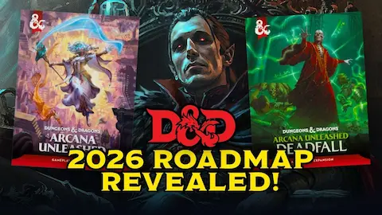

Wizards of the Coast acaba de publicar un nuevo Unearthed Arcana bajo el título Villainous Options, y la comunidad de D&D ya está dando vueltas a todo lo que implica. El playtest introduce opciones mecánicas oficiales para construir personajes con rasgos claramente oscuros o directamente malvados: habilidades, trasfondos y características que hasta ahora quedaban fuera del manual principal o dependían de la buena voluntad del DM.
Esto es algo que muchos jugadores llevaban tiempo pidiendo. La edición 2024 del Player's Handbook eliminó el alineamiento como restricción mecánica, y este playtest parece el siguiente paso lógico: si cualquier personaje puede actuar de cualquier manera, ¿por qué no tener herramientas diseñadas específicamente para campañas oscuras o grupos de antihéroes? Personalmente me parece una dirección interesante, aunque ya veo los debates infinitos en Reddit sobre si esto "arruina" D&D.
Como siempre con los Unearthed Arcana, el material está sujeto a cambios según el feedback que reciba. Si te interesa probarlo o dar tu opinión, Wizards tiene habilitado el formulario de respuesta habitual. Yo ya tengo pensado un warlock con más de un secreto que esconder.